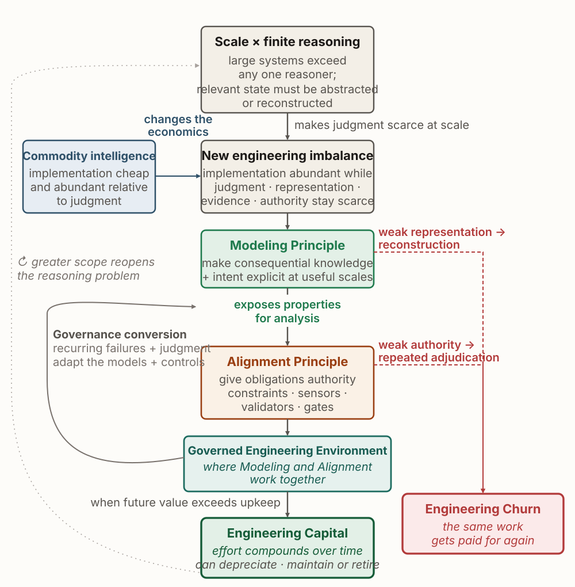

How should we engineer software when implementation becomes abundant but engineering judgment remains scarce?
Capable agents have made it much cheaper to produce working code. They have not made it cheaper to decide what should be built, which obligations govern it, how to read the resulting evidence, or whether the system is acceptable to ship.
MAGE studies the engineering structures that make delegated implementation governable: making consequential knowledge explicit as models, giving selected obligations authority over what agents produce, validating realizations against those models, and turning recurring human judgment into structures that later work can reuse.
Research

Scale creates the reasoning problem; commodity intelligence changes its economics. Modeling makes engineering properties explicit, alignment gives selected obligations authority, and governance conversion turns recurring judgment into structures later work can reuse. From the MAGE book.
The MAGE book and course
The book, the course mirror, the detailed framework, and adoption guidance are maintained separately.
AgentHub: A Registry for Discoverable, Verifiable, and Reproducible AI Agents
ICSE Journal Ahead Workshop (JAWs)
A registry for agents, treating discoverability, verification, and reproducibility as properties an agent ecosystem has to provide rather than properties individual users establish.
SysLLMatic: Large Language Models are Software System Optimizers
arXiv
Showed that language models can improve the measured performance of real software systems, and established the measurement setup the later agent-optimization work builds on.